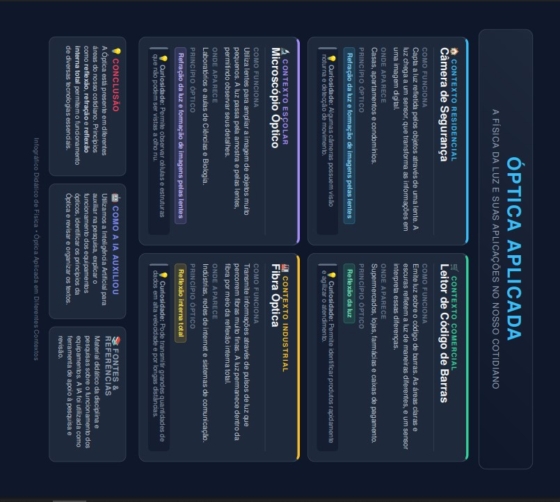
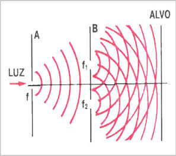
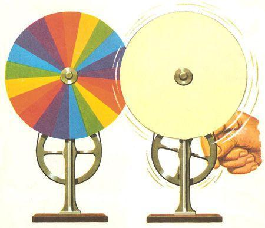
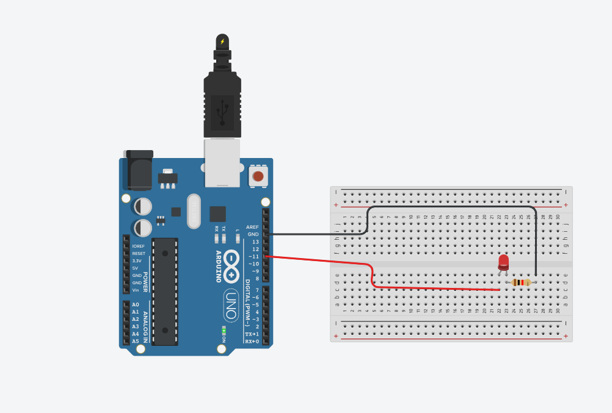
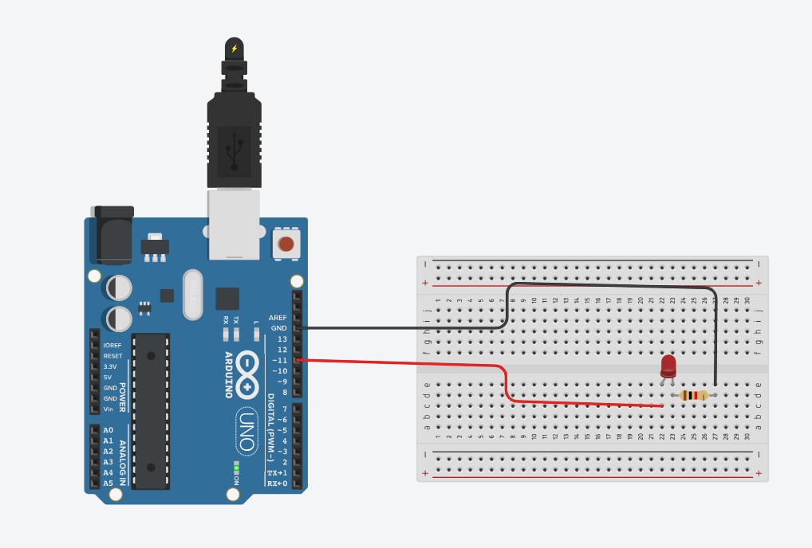
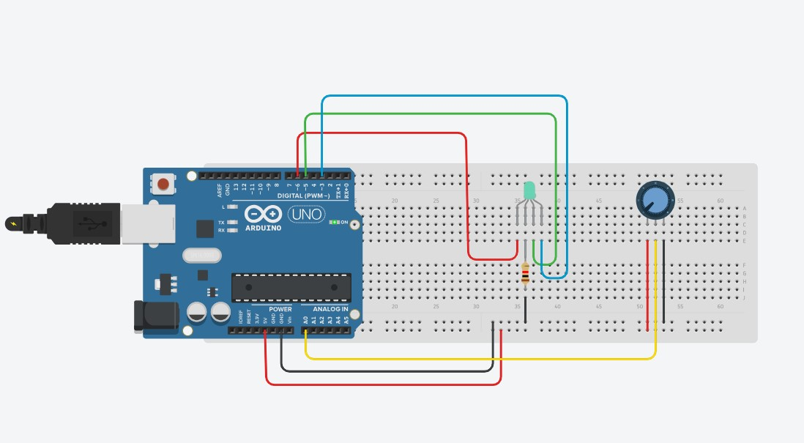

Tecnociência, Óptica e Informação
Introdução à Óptica
A óptica é o ramo da Física responsável por estudar a luz, suas formas de propagação e a maneira como ela interage com a matéria.
Para pessoas com baixa visão, a óptica é a base teórica e prática para a criação de lupas, óculos especiais, lentes de aumento e filtros de contraste, permitindo maior inclusão e autonomia na leitura e na navegação visual.
IA e Tecnologias: Desvendando a Óptica Aplicada em Diversos Contextos
Tecnociência
A tecnociência une investigação científica e aplicação tecnológica para transformar conhecimentos em soluções para problemas do cotidiano.
Na acessibilidade, isso contribui para leitores de tela, reconhecimento de imagens, IA, ampliação, sensores e interfaces acessíveis.

AFINAL, O QUE É A LUZ?
Thomas Young e a evidência do comportamento ondulatório
A compreensão sobre a natureza da luz mudou ao longo da História. No início do século XIX, o físico e médico inglês Thomas Young realizou estudos que trouxeram novas evidências para a ideia de que a luz apresenta comportamento ondulatório.
Contexto histórico
Thomas Young viveu entre 1773 e 1829. No final do século XVIII e início do século XIX, existiam diferentes explicações para a natureza da luz. A teoria corpuscular de Isaac Newton tinha grande influência, enquanto a proposta de que a luz poderia se comportar como uma onda, associada anteriormente a Christiaan Huygens, ainda precisava de evidências experimentais mais convincentes.
O problema investigado era entender como a luz se comportava e encontrar evidências que ajudassem a decidir entre diferentes explicações sobre sua natureza.
Quem foi Thomas Young?
Thomas Young foi um cientista inglês que atuou em diferentes áreas, incluindo Física e Medicina. No estudo da Óptica, ficou conhecido por suas pesquisas sobre interferência e pelo desenvolvimento de experimentos que ajudaram a sustentar a teoria ondulatória da luz.
A ideia sobre a luz
Young defendia que a luz poderia apresentar comportamento semelhante ao de uma onda. Para explicar determinados fenômenos ópticos, ele utilizou o conceito de interferência: quando ondas se encontram, elas podem se reforçar ou se enfraquecer.
Essa ideia permitia explicar fenômenos que eram difíceis de compreender utilizando somente a teoria corpuscular. Quando duas partes da luz interferem de maneira construtiva, podem produzir regiões mais claras. Quando interferem de maneira destrutiva, podem produzir regiões mais escuras.
Experimento e evidência
Uma das contribuições mais importantes de Young foi o estudo da interferência da luz. Em seus experimentos, a luz era dividida em caminhos diferentes e depois observada novamente. A sobreposição das ondas produzia franjas claras e escuras, um padrão característico de interferência.
Em 1801, Young apresentou sua pesquisa sobre a teoria da luz e das cores. Nos anos seguintes, descreveu demonstrações de interferência utilizando luz. A experiência associada às duas fendas tornou-se especialmente conhecida por mostrar como duas partes da luz podem produzir um padrão de interferência.

Representação relacionada aos estudos de Thomas Young sobre a interferência da luz.
O que acontece no experimento?
- A luz passa por uma abertura estreita e é direcionada para duas pequenas aberturas.
- A luz que passa pelas duas aberturas se espalha e forma ondas.
- As ondas se encontram e podem sofrer interferência construtiva ou destrutiva.
- Em uma tela, aparecem regiões claras e escuras formando um padrão de interferência.
Luz → Duas aberturas → Interferência → Franjas claras e escuras
Importância para a Física
Os estudos de Young foram importantes porque forneceram evidências experimentais para o comportamento ondulatório da luz. Seus resultados ajudaram a fortalecer a teoria ondulatória e contribuíram para que os cientistas buscassem novas explicações para fenômenos relacionados à luz.
A interferência passou a ser uma evidência importante para compreender a luz como uma onda, principalmente porque o padrão de regiões claras e escuras podia ser explicado pela superposição de ondas.
Conexão com a Física atual
Atualmente, a Física entende que a luz apresenta uma natureza quântica e pode manifestar comportamentos associados tanto a ondas quanto a partículas. O experimento de interferência de Young continua sendo fundamental para o estudo da Óptica e da Física Quântica.
O conceito de interferência também está relacionado a diversas aplicações modernas, como técnicas ópticas, instrumentos científicos e estudos de fenômenos quânticos.
Curiosidade
Embora o experimento seja frequentemente chamado de "experimento da dupla fenda", a primeira demonstração de interferência realizada por Young não utilizou exatamente duas fendas. Ele utilizou um pequeno cartão para dividir o feixe de luz e observar as franjas produzidas pela interferência.
Como utilizamos a IA?
Utilizamos uma ferramenta de Inteligência Artificial para auxiliar na compreensão dos estudos de Thomas Young, na organização das informações e na explicação do experimento de interferência em uma linguagem adequada para estudantes do Ensino Médio. As informações foram conferidas em fontes de referência sobre História da Física e Óptica antes de serem organizadas para publicação no site.
Robótica
A robótica integra engenharia, computação e eletrônica para criar dispositivos que automatizam tarefas e auxiliam as pessoas.
Na acessibilidade, pode contribuir para bengalas inteligentes, próteses, dispositivos de navegação e outros sistemas de auxílio.
1. Apresentação da Atividade: Disco de Newton
O objetivo foi compreender, de forma prática, a relação entre a luz branca e as cores do espectro visível usando o Disco de Newton.
Cada aluno construiu seu disco com papel, papelão, lápis de cor, tesoura e um palito. O círculo foi dividido em sete partes e pintado com vermelho, laranja, amarelo, verde, azul, anil e violeta.
Depois da montagem, o disco foi girado em diferentes velocidades e as observações foram discutidas em aula.
Resultado do experimento
Quando gira rapidamente, as cores deixam de ser percebidas separadamente e ocorre uma mistura visual, produzindo uma aparência clara, branca ou acinzentada. Assim, foi possível observar na prática a relação entre as cores e a percepção da luz branca.

Disco de Newton dividido em sete partes com as cores do espectro visível.
Princípios envolvidos
Percepção e mistura das cores
Com a rotação rápida, as cores passam pelo campo visual em pouco tempo e deixam de ser percebidas completamente separadas, produzindo uma mistura visual.
Persistência da visão
O sistema visual integra informações apresentadas rapidamente, criando uma sensação de continuidade e mistura.

2. Explicação Científica
2.1 Quem foi Isaac Newton?
Isaac Newton (1643–1727) foi um importante físico, matemático e astrônomo. Seus estudos de óptica, incluindo experimentos com prismas, ajudaram a compreender melhor a luz e as cores.
2.2 O que é a Luz Branca?
A luz branca, como a do Sol, é policromática, pois contém diferentes componentes do espectro visível. Ao atravessar certos materiais, essas cores podem ser separadas.
2.3 Refração da Luz
Refração é o desvio da luz quando ela muda de meio, como do ar para o vidro. Diferentes comprimentos de onda podem sofrer desvios diferentes.
- Vermelho: maior comprimento de onda na faixa visível.
- Violeta: menor comprimento de onda na faixa visível.
2.4 O Espectro Visível
É a faixa do espectro eletromagnético detectada pelo olho humano.
- Vermelho
- Laranja
- Amarelo
- Verde
- Azul
- Anil ou Índigo
- Violeta
2.5 Mistura das Cores: Adição x Subtração
Mistura aditiva: ocorre com luzes coloridas; suas combinações podem produzir a percepção de branco.
Mistura subtrativa: ocorre com pigmentos e materiais que absorvem partes da luz.
O Disco de Newton permite observar uma mistura visual das cores durante a rotação rápida.
2.6 Por que o Disco de Newton parece branco quando gira rapidamente?
O efeito está ligado ao processamento visual de informações rápidas.
Retenção da informação visual
Cada setor passa pelo campo visual em um intervalo muito curto.
Sobreposição visual
O cérebro integra as cores apresentadas sucessivamente e deixa de percebê-las isoladamente.
Fusão das cores
O resultado pode ser uma aparência próxima do branco, cinza ou creme, dependendo das condições do experimento.
3. Relação com a Deficiência Visual
3.1 Como pessoas com baixa visão percebem a luz?
Pessoas com baixa visão podem ter diferentes níveis de visão residual e perceber claridade, sombras, formas ou direção da luz.
Visão residual
Algumas pessoas percebem luz natural ou artificial, ajudando a identificar ambientes claros ou escuros.
Fotofobia
Algumas pessoas possuem maior sensibilidade à luz e podem sentir desconforto em ambientes muito claros.
Ofuscamento
O excesso de luminosidade pode dificultar a adaptação visual, especialmente nas mudanças entre ambientes claros e escuros.
3.2 Todas as pessoas enxergam as cores da mesma maneira?
Não. A percepção pode variar por fatores biológicos, daltonismo, envelhecimento e outras características visuais.
3.3 Como a iluminação interfere na percepção dos objetos?
A iluminação interfere na percepção de objetos, cores, texturas, formas, sombras e reflexos.
Cor e tonalidade
A luz disponível influencia a aparência das cores refletidas pelos objetos.
Temperatura da luz
Luzes quentes ou frias podem alterar a aparência das cores.
Forma e relevo
A luz e as sombras ajudam a revelar texturas, contornos e relevos.
Volume
Regiões claras e escuras ajudam a interpretar profundidade e tridimensionalidade.
Textura e acabamento
Superfícies polidas produzem mais reflexos; superfícies foscas espalham a luz.
3.4 Por que compreender a formação das cores é importante para desenvolver tecnologias de acessibilidade?
Compreender as cores ajuda a desenvolver tecnologias mais acessíveis. Aplicativos, telas e sinalizações podem combinar cores com textos, símbolos, padrões e contrastes para incluir pessoas com baixa visão ou daltonismo.
4. Tecnologias Existentes
4.1 Óculos Eletrônicos para Baixa Visão
Utilizam câmeras e telas para apresentar imagens ampliadas, com recursos de brilho, contraste e cores.
Como funcionam?
- Câmera capta a imagem.
- O sistema processa e amplia.
- Brilho, contraste e cores podem ser ajustados.
- Alguns fazem leitura de texto.
Possíveis aplicações
- Leitura.
- Placas e objetos.
- Rostos.
- Telas.
4.2 Leitores de Cor
Usam sensores ópticos para analisar a luz refletida e identificar cores, podendo informar o resultado por áudio.
Como funcionam?
O usuário aponta o sensor para uma superfície e o dispositivo processa e informa a cor.
Exemplos: “Vermelho”, “Azul escuro”, “Verde” e “Amarelo”.
Possíveis usos
- Escolher roupas.
- Organizar objetos.
- Identificar embalagens e alimentos.
- Verificar indicadores luminosos.
4.3 Lupas Eletrônicas e Vídeo Ampliadores
Usam câmeras e sistemas ópticos para ampliar textos, imagens e detalhes.
Como funcionam?
- Câmera captura o material.
- Imagem aparece na tela.
- Zoom, contraste, cores e iluminação podem ser ajustados.
Para que servem?
- Leitura e estudo.
- Receitas, bulas e formulários.
- Etiquetas e trabalhos manuais.
Tipos de lupa eletrônica
Portáteis: câmera, tela e bateria no aparelho.
De mesa: úteis para leitura prolongada.
Celular ou tablet: usam a câmera e aplicativos.
Principal vantagem
Permitem combinar ampliação, contraste, cores e iluminação conforme a necessidade. São tecnologias assistivas e não tratam a causa da baixa visão.
4.4 Bengalas Inteligentes com Sensores Ópticos
Usam sensores para detectar obstáculos e auxiliar na locomoção.
Como funcionam?
Podem usar ultrassom, LiDAR ou câmeras para analisar o espaço.
Podem detectar carros, galhos, portas, placas, paredes, objetos suspensos e desníveis.
Como a pessoa recebe o alerta?
- Vibração
- Som
- Voz
Sensores ópticos
LiDAR usa luz para medir distâncias; câmeras podem trabalhar com IA para analisar objetos.
Bengala tradicional: detecta por contato. Com sensor: pode detectar antes do contato. Com câmera e IA: pode tentar identificar o objeto.
Exemplo no Brasil
O projeto BIA, no Paraná, pesquisa o uso de IA e sensores em bengalas. Sistemas eletrônicos devem ser vistos como complementares à bengala branca tradicional.
4.5 Sistemas de Visão Artificial com Inteligência Artificial
Combinam câmeras, sensores e IA para analisar imagens e interpretar informações visuais.
Câmera → Inteligência Artificial → Interpretação → Voz
Reconhecimento de textos
OCR pode reconhecer textos e transformá-los em áudio.
Reconhecimento de pessoas
Alguns sistemas reconhecem rostos cadastrados.
Reconhecimento de objetos
A IA pode identificar objetos do cotidiano.
Identificação de dinheiro
Alguns dispositivos identificam cédulas.
Identificação de cores
Sistemas de visão computacional podem analisar cores.
Descrição do ambiente
Sistemas avançados podem descrever uma cena.
Onde podem ser utilizados?
- Óculos inteligentes.
- Celulares e tablets.
- Câmeras portáteis.
- Dispositivos de tecnologia assistiva.
Exemplo prático
Uma pessoa poderia apontar a câmera para uma prateleira e perguntar qual produto está à frente; o sistema poderia responder por áudio.
Uma limitação importante
A IA pode errar, especialmente com pouca iluminação ou imagens ruins. Por isso, não substitui completamente recursos tradicionais de orientação e mobilidade.
Comparação entre algumas tecnologias
| Tecnologia | Principal função |
|---|---|
| Lupa eletrônica | Aumenta o que a pessoa observa. |
| Leitor de cor | Identifica cores. |
| Bengala inteligente | Detecta obstáculos. |
| Visão artificial com IA | Analisa informações visuais. |
5. Nossa Proposta
5.1 O Problema que Será Resolvido
Mudanças de luminosidade e exposição às telas podem causar desconforto visual. Lentes fotocromáticas também podem não reagir idealmente em todas as situações.
5.2 O Público-Alvo
- Pessoas que usam óculos.
- Estudantes e trabalhadores.
- Pessoas que alternam entre ambientes internos e externos.
- Pessoas sensíveis à luz.
5.3 Funcionamento da Tecnologia
A proposta é criar óculos inteligentes que monitorem a iluminação. Sensores mediriam a luz e um microcontrolador controlaria uma película ou lente eletrocrômica, ajustando a transparência.
Sensor de luz → Microcontrolador → Processamento → Lente ativa → Ajuste da luminosidade
5.4 Componentes Necessários
- Sensores: LDR ou BH1750.
- Microcontrolador: ESP32 ou Arduino Nano.
- Lente ativa: filme eletrocrômico.
- Bateria: fonte compacta e recarregável.
- Bluetooth: comunicação com smartphone.
5.5 Controle da Intensidade Luminosa
Sensores e PWM podem permitir ajustes graduais, evitando mudanças bruscas e buscando maior conforto visual.
5.6 Como a Inteligência Artificial Ampliará a Eficiência
Aprendizado de preferências
A IA poderia aprender os níveis de luminosidade mais confortáveis para cada usuário.
Predição e automação
Poderia usar horários e condições de iluminação para ajustar o sistema automaticamente.
Gestão de energia
Poderia ajudar a otimizar o consumo e aumentar a autonomia da bateria.
Atividade 2 – LED Fade-In e Fade-Out
1. Apresentação da atividade
Desenvolvemos e simulamos no Tinkercad um circuito com Arduino, resistor e LED para compreender, na prática, a relação entre eletrônica e programação. O circuito foi montado, testado e ajustado até funcionar corretamente.
Montagem do circuito
O Arduino controla o LED pelo pino 11. O resistor limita a corrente elétrica e o GND fecha o circuito.

Circuito utilizado para realizar o efeito LED Fade-In no Tinkercad.

Circuito utilizado para realizar o efeito LED Fade-Out no Tinkercad.
Programação
No Fade-In, o brilho do LED começa baixo e aumenta gradualmente.
No Fade-Out, o brilho começa alto e diminui até chegar a zero.
O comando analogWrite() controla o PWM, enquanto
delay(50) torna a transição mais suave.
2. Explicação científica
LED significa Diodo Emissor de Luz. É um componente semicondutor que transforma energia elétrica em luz por meio da eletroluminescência.
O PWM permite controlar a potência média fornecida ao LED, fazendo com que ele pareça mais claro ou mais fraco.
3. Relação com a deficiência visual
A iluminação interfere na segurança, orientação e percepção. Pouca luz pode dificultar a identificação de objetos e obstáculos, enquanto o excesso de brilho pode causar desconforto e ofuscamento. Por isso, uma iluminação ajustável pode contribuir para maior conforto e acessibilidade.
4. Tecnologias existentes
- Magno Lumina Max: iluminação LED regulável.
- Mobilux Digital Touch HD: lupa eletrônica com ampliação, contraste e iluminação LED.
- Quick Look Zoom: lupa digital com controle de brilho e iluminação.
- BenQ e-Reading Lamp: iluminação ampla com recursos de ajuste automático.
- eSight 4: utiliza câmeras e telas para melhorar a visualização de imagens.
5. Nossa proposta – Luz Assist
A Luz Assist seria um sistema que utilizaria sensores para medir a intensidade da luz e um Arduino para controlar automaticamente a intensidade de uma lâmpada LED.
Em ambientes escuros, o sistema aumentaria gradualmente a iluminação. Quando houvesse luz suficiente, reduziria o brilho para evitar excesso de luminosidade.
Sensor de luminosidade → Arduino → Processamento → Controle do LED → Iluminação adequada
Os componentes necessários seriam Arduino, sensor de luminosidade, LED, resistores, fios e uma fonte de energia.
Uma versão mais avançada poderia utilizar Inteligência Artificial para aprender os níveis de iluminação mais adequados para cada usuário.
6. Uso da Inteligência Artificial
A Inteligência Artificial foi utilizada como apoio à pesquisa, organização das ideias e compreensão dos conteúdos relacionados à eletrônica, iluminação, acessibilidade e programação.
Em uma versão avançada da Luz Assist, a IA poderia analisar padrões de utilização e ajudar a personalizar automaticamente a iluminação de acordo com as preferências do usuário.
7. Conclusão
A atividade mostrou como o Arduino, o PWM e o controle da intensidade luminosa podem ser utilizados para criar soluções tecnológicas. O controle gradual da iluminação pode contribuir para segurança, conforto e acessibilidade, principalmente em situações nas quais diferentes níveis de luminosidade são necessários.
Atividade 3 – LED RGB
1. Apresentação da atividade
Utilizamos o Tinkercad para montar e simular um circuito com LED RGB. O componente possui três cores principais: vermelho, verde e azul, que podem ser controladas separadamente para produzir diferentes cores.
Montagem do circuito
O circuito utiliza Arduino, LED RGB e resistores. A simulação permitiu testar diferentes combinações de cores e identificar possíveis erros durante a montagem.

Circuito com LED RGB, Arduino e resistores montado e simulado no Tinkercad.
Programação do LED RGB
A programação controla separadamente as intensidades das cores vermelho, verde e azul. Com diferentes combinações dessas três cores, é possível produzir diversas outras cores.
2. Explicação científica
RGB significa Red, Green e Blue, ou seja, vermelho, verde e azul. Essas são as três cores utilizadas na mistura aditiva da luz.
Na mistura aditiva:
- Vermelho + Verde = Amarelo
- Verde + Azul = Ciano
- Vermelho + Azul = Magenta
- Vermelho + Verde + Azul = Branco
3. Relação com a deficiência visual
Cores e contraste podem ajudar na percepção de textos, objetos, sinais e informações visuais.
Porém, informações acessíveis não devem depender somente das cores. Textos, símbolos, formas, padrões e contraste também devem ser utilizados para facilitar a compreensão por pessoas com diferentes características visuais.
4. Tecnologias existentes
- Envision Glasses: utiliza câmera e Inteligência Artificial para auxiliar na interpretação de informações visuais.
- Seeing AI: aplicativo capaz de reconhecer textos, objetos e algumas características visuais.
- OrCam MyEye: dispositivo que fornece informações visuais por meio de áudio.
- eSight: utiliza processamento de imagens, contraste e outros recursos para auxiliar pessoas com baixa visão.
- TOPAZ EZ HD: equipamento de ampliação com iluminação e diferentes modos de contraste.
5. Nossa proposta – Color Assist
O Color Assist seria um dispositivo desenvolvido para auxiliar pessoas que possuem dificuldade para identificar determinadas cores.
Um sensor ou câmera identificaria a cor de um objeto. O Arduino ou outro microcontrolador processaria as informações e o LED RGB poderia representar a cor identificada. Além disso, um buzzer ou alto-falante poderia informar o nome da cor por áudio.
Objeto → Sensor/Câmera → Arduino/IA → Processamento → LED RGB + Áudio → Informação ao usuário
Os componentes poderiam incluir Arduino, LED RGB, sensor de cor, resistores, buzzer ou alto-falante, câmera, sistema de comunicação, bateria e uma estrutura para o dispositivo.
6. Inteligência Artificial
Em uma versão avançada, a Inteligência Artificial poderia ajudar a identificar cores, objetos e textos captados pela câmera.
Durante o desenvolvimento do trabalho, o ChatGPT foi utilizado como apoio à pesquisa, organização das informações e compreensão dos conteúdos. As informações importantes foram conferidas em fontes de referência.
7. Conclusão
A atividade mostrou como o LED RGB, a mistura aditiva das cores, a programação e a eletrônica podem ser utilizados no desenvolvimento de soluções acessíveis.
A combinação de informações visuais e sonoras pode ajudar a tornar determinadas tecnologias mais acessíveis e aumentar a autonomia dos usuários.
Referências
- OPENSTAX. Young's Double-Slit Interference. University Physics Volume 3. Disponível em: https://openstax.org/books/university-physics-volume-3/pages/3-1-youngs-double-slit-interference. Acesso em: 23 ago. 2026.
- OPENSTAX. Young's Double Slit Experiment. College Physics. Disponível em: https://openstax.org/books/college-physics/pages/27-3-youngs-double-slit-experiment. Acesso em: 23 ago. 2026.
- BRASIL ESCOLA. Disco de Newton. Disponível em: https://brasilescola.uol.com.br/fisica/disco-newton.htm. Acesso em: 23 ago. 2026.
- TODA MATÉRIA. Disco de Newton. Disponível em: https://www.todamateria.com.br/disco-de-newton/. Acesso em: 23 ago. 2026.
- MUNDO EDUCAÇÃO. Disco de Newton. Disponível em: https://mundoeducacao.uol.com.br/fisica/disco-newton.htm. Acesso em: 23 ago. 2026.
- NASA. Isaac Newton. Disponível em: https://science.nasa.gov/people/isaac-newton/. Acesso em: 23 ago. 2026.
- ARDUINO. analogWrite() – Arduino Reference. Documentação sobre PWM e controle da intensidade de LEDs. Disponível em: https://github.com/arduino/reference-en/blob/master/Language/Functions/Analog%20IO/analogWrite.adoc. Acesso em: 23 ago. 2026.
- WORLD HEALTH ORGANIZATION (WHO). Blindness and vision impairment. Disponível em: https://www.who.int/news-room/fact-sheets/detail/blindness-and-visual-impairment. Acesso em: 23 ago. 2026.
- W3C – WORLD WIDE WEB CONSORTIUM. Web Content Accessibility Guidelines (WCAG). Diretrizes relacionadas à acessibilidade, contraste e uso de cores. Disponível em: https://www.w3.org/WAI/standards-guidelines/wcag/. Acesso em: 23 ago. 2026.
- MICROSOFT. Seeing AI. Tecnologia assistiva para reconhecimento e descrição de informações visuais. Disponível em: https://www.microsoft.com/en-us/ai/seeing-ai. Acesso em: 23 ago. 2026.
- ENVISION. Envision Glasses. Tecnologia assistiva baseada em câmera e Inteligência Artificial. Disponível em: https://www.letsenvision.com/. Acesso em: 23 ago. 2026.
- ORCAM. OrCam MyEye. Tecnologia assistiva para reconhecimento de informações visuais. Disponível em: https://www.orcam.com/. Acesso em: 23 ago. 2026.
- ESIGHT. eSight – Assistive Technology. Tecnologia eletrônica voltada para pessoas com baixa visão. Disponível em: https://esighteyewear.com/. Acesso em: 23 ago. 2026.
- FREEDOM SCIENTIFIC. TOPAZ EZ HD. Tecnologia de ampliação eletrônica para baixa visão. Disponível em: https://www.freedomscientific.com/. Acesso em: 23 ago. 2026.
- OPENAI. ChatGPT. Ferramenta utilizada como apoio à pesquisa, organização das ideias e compreensão dos conteúdos. Disponível em: https://chatgpt.com/. Acesso em: 23 ago. 2026.